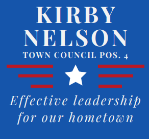

Kirby NelsonforTown Council |
||
A wise and frugal government, which shall restrain men from injuring one another, shall leave them otherwise free to regulate their own pursuits of industry and improvement, and shall not take from the mouth of labor the bread it has earned; this is the sum of good government.President Thomsas Jefferson |
Contact |
 |
Work HistoryH.S. Vocational Agriculture Teacher JAG Officer, US Navy Chief Counsel for Idaho Board of Education and State Department of Education Foreign Service Officer and Diplomat, U.S. Department of State Career Highlights:
|
VisionThe Future of EatonvilleLet's celebrate our unique town's history
and culture. CooperationOn behalf of all residents, the council must
put aside petty bickering and self-serving
grandstanding. Disagreements naturally
arise, but discourse should remain civil.
|
Crime & Public SafetyThe first duty of government is to protect its
citizens.
Private Property RightsIt's obvious but worth repeating - your
property is yours. Town building regulations
should be clear and easy to understand, and
permit approvals should be made quickly
without overburdening property owners
Pro-BusinessEatonville businesses are an asset to our
town.
Taxes and FeesNecessary services cost money, and taxes
must be levied to pay for them.
|